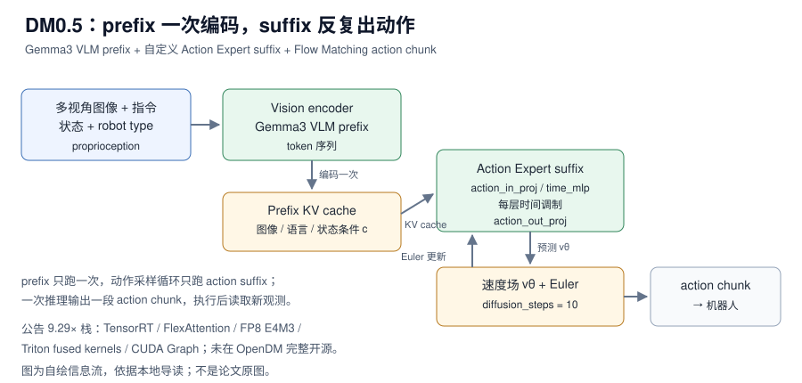

EVA-Client 精读：把“训练完”到“真机能跑、能审计”的工程链路固定下来
EVA-Client 重新分配的是“模型推理”和“机器人执行”之间的边界——观测格式、动作块调度、动作空间转换和评测记录从训练脚本里拆出来，做成一个可以替换策略后端的客户端。【章节】
轻量化部署
DM0.5 重新分配的是“模型语义”和“执行形状”的边界——模型结构保持 Gemma3 VLM + Action Expert + Flow Matching，但把在线执行拆成 prefix 一次编码、suffix 反复采样，再用 TensorRT、FlexAttention、FP8、Triton fused kernels 和 CUDA Graph 压缩固定形状的计算与调度。【章节】
DM0.5 是 Dexmal 的开放世界具身 VLA，基于 Gemma3 VLM prefix 和自定义 Action Expert suffix，用 Flow Matching 生成 action chunk。官方性能公告称，在 RTX 4090D 上模型核心延迟从 534.04 ms 降到 57.49 ms，累计加速 9.29×；API 延迟为 p50 67.75 ms、p90 70.01 ms；相同 checkpoint 和 LIBERO 输入下，2000 个 episode 的成功率从 98.45% 变为 98.40%。这些是官方公告数字，未在本机复测；其中 9.29× 专用优化栈并未在当前 OpenDM 中完整开源。可复现的是模型阅读、权重下载、推理服务、SFT/LoRA 和公开 benchmark 入口。
来源约定：本文事实只取自本仓库 DM0.5 导读，没有用模型记忆补写论文细节。
标注约定：【公告】指本地章节转述的官方技术博客/性能公告；【源码】指章节核对的 OpenDM 公开源码；【章节】指本地章节自己的归纳；【未给】指章节没有提供。
版本：官方技术博客；arXiv 编号章节未给；代码 commit 章节未给；查阅日期 2026-11-01。
| 资源 | 入口 | 状态 / 阅读用途 |
|---|---|---|
| 论文 | 章节未给 arXiv；DM0.5 官方技术博客 | 模型介绍与 9.29× 性能公告入口 |
| 源码 | dexmal/opendm | 权重、训练、推理服务、数据注册与评测；Apache-2.0 |
| 权重 | Dexmal/DM05 | 6B 级 DM0.5 权重与模型文件 |
| 权重（衍生） | Dexmal/DM05-libero、Dexmal/DM05-robotwin2、Dexmal/DM05-SO101-Pick-Cube（章节只给名称） | 面向 LIBERO / RoboTwin2.0 / SO-101 的模型入口 |
| 项目页 | dexmal.com/blog/dm0.5 | 官方模型介绍、性能公告与视觉展示 |
| 数据集 | LIBERO、RoboTwin2.0（章节只给 benchmark 名，未给数据集仓库链接） | 公开评测入口；协议见官方 guide |
| 相邻参考 | dexmal/realtime-vla | DM0/Pi0/Pi05 的 Triton 推理参考，不是 DM0.5 9.29× 实现 |
论文题目：章节未给（官方入口是 DM0.5 技术博客，不是 arXiv 论文）；arXiv：章节未给；版本：官方博客当前版本；代码 commit：章节未给；查阅日期：2026-11-01。
版本提示： 章节没有给模型版本号或旧版 DM0.5 数字；全文只使用本地导读转述的当前公开模型卡与公告。Dexmal/DM05 是主模型卡，DM05-libero、DM05-robotwin2、DM05-SO101-Pick-Cube 是章节列出的衍生入口，不能把它们的结果混在一张表里。
一句话：DM0.5 重新分配的是“模型语义”和“执行形状”的边界——模型结构保持 Gemma3 VLM + Action Expert + Flow Matching，但把在线执行拆成 prefix 一次编码、suffix 反复采样，再用 TensorRT、FlexAttention、FP8、Triton fused kernels 和 CUDA Graph 压缩固定形状的计算与调度。【章节】

图 1：DM0.5 的 prefix 编码、KV cache、Action Expert suffix 与 Euler 采样信息流。自绘，依据本地导读；不是论文原图。
对比主流路径：每个 action step 都重跑完整 VLM → prefix 只跑一次并缓存 KV，动作采样循环只跑 action suffix。
DM0.5 的输入不是单一图像，而是一个机器人决策样本：多视角图像、任务文本、proprioception/state 和 robot type。视觉输入先过视觉编码器，再进入 Gemma3 VLM 的多模态路径；文本指令和机器人状态按 OpenDM 的 processor、dataset transform 和 prompt 约定组织，最终形成 prefix token 序列。【源码】
prefix 的输出有两类用途：一是当前观测的多模态 hidden states，作为动作专家的条件；二是保存 VLM 的 KV cache，让后续动作生成步骤不需要重复把相同图像和文本再过一遍完整 VLM。章节把这一步称为理解低延迟优化的钥匙：如果一个 action chunk 需要 10 个 Flow Matching steps，每个 step 都重跑视觉编码和语言 prefix 会非常浪费；prefix 只做一次，后续只处理 action suffix，才能把采样循环压到几十毫秒量级。【章节】
DM05ActionExpert 继承 Gemma3 的文本模型结构，但承担动作 suffix 的工作。它不是只把最后一个 hidden state 过一层 MLP，而是让动作 token/动作向量在一个 transformer action expert 中与 prefix 条件交互。公开代码能确认的模块包括：action_in_proj 把连续动作向量投影到语言模型隐藏维度；time_mlp_in / time_mlp_out 把 Flow Matching 时间步编码成调制信号；每层的时间调制器让 action expert 知道当前在噪声轨迹的哪个位置；prefix KV cache 让 suffix 访问图像、文本、状态条件；action_out_proj 把 hidden states 投影回动作维度，得到速度场预测。【源码】
| 模块 | 输入 | 输出 | 读代码时看什么 |
|---|---|---|---|
| Vision encoder | 多视角图像 | 视觉 token | 图像数量、分辨率、是否固定 shape |
| Gemma3 VLM prefix | 视觉 token、文本、状态、robot type | prefix hidden states + KV cache | prompt 模板、token 长度、cache 布局 |
action_in_proj | 连续动作 chunk x_t | 隐藏维度动作 token | 动作维度、归一化、投影维度 |
time_mlp_in/out | Flow Matching 时间步 t | 调制信号 | 时间编码方式、每层注入位置 |
| Action Expert suffix | 动作 token + prefix KV cache | 动作 hidden states | 层数、attention 实现、mask |
action_out_proj | 动作 hidden states | 速度场 v_θ | 输出维度、是否带 action mask |
令真实动作 chunk 为 a，随机噪声为 ε，公开实现采用线性插值构造中间状态，并回归速度场：
x_t = t · ε + (1 − t) · a
u_t = ε − a
L = MSE(v_θ(x_t, t | c), u_t)其中 c 是 prefix 编码得到的图像/语言/状态条件。训练损失只对有效动作维度和有效时间片计算，action mask 很重要，避免 padding 或无效维度干扰动作专家学习。【源码】
推理时没有真实动作 a，从随机 x_1 出发，反复调用 action suffix 估计速度，再用 Euler 更新把噪声积分到动作轨迹：
x_{t−dt} = x_t + v_θ(x_t, t | c) · dt公开实现默认 diffusion_steps=10，最终返回一段 action chunk；机器人执行其中一部分后，再读取新观测重新推理，这就是 receding-horizon / action chunking 闭环。【源码】
章节只转述官方性能公告，没有给逐任务成功率、baseline 对比、精确参数量、推理显存或真实机器人实验。下表把“公告值”和“能说明什么”放在一起，避免把不同口径横比。
| 指标 | 公告值 | 口径 / 能说明什么 |
|---|---|---|
| 模型核心延迟（优化前） | 534.04 ms | RTX 4090D；公告口径 |
| 模型核心延迟（优化后） | 57.49 ms | 同一硬件与输入条件；公告口径 |
| 累计加速 | 9.29× | 534.04 / 57.49 ≈ 9.29；不是通用 benchmark |
| API 延迟 p50 | 67.75 ms | 含服务侧开销，不等于模型核心延迟 |
| API 延迟 p90 | 70.01 ms | 公告只给 p50/p90，未给 p99 |
| LIBERO 成功率 | 98.45% → 98.40% | 相同 checkpoint 与输入，2000 episodes；说明优化未明显伤害行为 |
| 参数量 | 6B 级 | 模型卡描述；章节未给精确值 |
| 推理显存 | 章节未给 | 不能从 4090D 反推部署门槛 |
读法：98.45% → 98.40% 是对“推理优化没有显著伤害任务表现”的有价值证据，但它只覆盖特定 checkpoint、输入协议和 LIBERO benchmark，不是通用性能证明。公告没有给 baseline 模型、任务级拆分、seeds 或真实机器人结果，不能把 9.29× 当成所有 VLA 的通用加速比。
来源：本地导读 §1、§9；官方技术博客性能公告。
章节把公告思路按在线推理链路分成五层。表格的“当前公开状态”列区分 OpenDM 源码可见、相邻参考与未公开部分。
| 层级 | 公告中的技术 | 解决什么问题 | 当前公开状态 |
|---|---|---|---|
| Vision | checkpoint-specific TensorRT engine、FP16、static I/O、fixed image-count contract | 把视觉编码器变成固定输入形状的高效 engine，减少动态图与 Python 调度 | OpenDM 未公开完整 DM0.5 TensorRT engine 构建代码 |
| Prefix attention | Tuned FlexAttention | 针对固定 prefix mask、序列长度和 attention 访问模式减少通用实现开销 | 模型配置可见 flex_attention / sdpa 入口，但不是完整部署优化包 |
| Prefix MLP | FP8 E4M3 Tensor Core gate/up/down GEMM | 用 FP8 Tensor Core 加速 MLP 三个大矩阵乘 | OpenDM 未检索到 DM0.5 FP8 kernel / 校准脚本 |
| Suffix | Triton fused kernels | 融合逐元素、投影、归一化或小算子，减少 kernel launch 与中间张量读写 | realtime-vla 有 DM0 Triton 参考；OpenDM 未出现公告完整 suffix 实现 |
| Runtime | startup-captured CUDA Graph、static-address buffers、one replay | 把固定形状在线执行从多次 launch 压成一次 graph replay | Dexbotic DM0 realtime 文档有类似固定步数约束；DM0.5 9.29× 专用代码未完整公开 |
TensorRT engine 不是“装上 TensorRT 就自动变快”。它往往需要根据 checkpoint、输入尺寸、图像数量和数据类型构建或选择 engine。公告强调四个词：checkpoint-specific 表示权重、层结构、量化/精度策略和 engine 绑定，不能拿另一模型的 engine；FP16 execution 降低显存带宽和 Tensor Core 计算成本；static I/O 让输入输出 buffer 形状固定，便于内存复用、地址稳定和 CUDA Graph 捕获；fixed image-count contract 要求部署端固定每次输入几路图像，否则静态 engine 和 graph 会失效或需要多份 profile。【公告】
因此它对在线机器人系统的启发不是“都换 TensorRT”，而是：先把观测协议固定下来，再为固定协议做 engine。
VLA 的 prefix 和 suffix 具有不同的 attention 结构。prefix 要处理图像 token、文本 token 和状态 token；suffix 要访问 prefix cache，同时处理当前 action chunk 的 token/向量。通用 attention 可能为 mask、shape、KV layout 和不同阶段付出额外开销。FlexAttention 允许实现者描述更贴合模型结构的访问模式，再由 PyTorch 编译/生成高效执行路径。OpenDM 当前源码保留了 VLM LLM 和 action expert 对 flex_attention / sdpa 的选择入口，但这不等于公告中的全部 tuned kernel 已经公开。【源码】
Transformer 的 MLP 通常包含大规模 gate/up/down 投影矩阵乘，算力和显存访问都很重。公告针对 prefix MLP 的 gate/up/down 使用 FP8 E4M3 Tensor Core GEMM，收益来自更少的权重/激活带宽、4090D 等 GPU 对低精度矩阵乘更高的吞吐，以及把 FP8 集中放在对吞吐最敏感的矩阵乘上，而不是无差别量化所有模块。【公告】
但 FP8 不是写一个 dtype 就结束：还需要 scale、动态范围、累加精度、权重布局、校准数据和输出误差。没有官方校准及 kernel 实现，读者不应把这一层当成当前 OpenDM 的可直接复现步骤。
动作 suffix 往往在每个 Flow Matching step 内重复执行。即使每个小算子只耗很短时间，很多 kernel launch、临时 tensor 写回和 Python/框架调度叠加后，延迟也会明显增加。Triton fused kernel 的典型目标是把一串固定操作合成一个 GPU kernel，例如读取输入 → 归一化/逐元素调制 → 投影或 GEMM → 激活 → 写回。实际融合边界要结合模型维度、寄存器占用、occupancy、L2 命中率和数值误差来定，不能只看 kernel 数量。【章节】
CUDA Graph 适合“形状固定、控制流固定、内存地址固定”的推理循环：先用固定形状的 dummy buffer 运行一次并 capture graph，在线阶段只把新观测搬进已分配好的静态 buffer，再 replay。它减少 runtime launch overhead，但带来约束：image count、分辨率、prompt/token 长度和 action chunk shape 需要固定或分桶；graph 捕获时的 CUDA stream、buffer 地址和执行路径必须稳定；不能在线临时改变 diffusion steps；复杂动态分支、动态内存分配或异常处理不能随意放进 graph。【公告】
读者该不该复用：如果部署输入 contract 稳定、追求低延迟，prefix KV cache + 静态 shape + CUDA Graph 的方向值得复用；如果输入经常变化、需要动态 batching 或在线改 diffusion steps，静态优化会带来大量分桶与重捕获成本。
来源：本地导读 §6；OpenDM 源码核对；Dexbotic DM0 realtime 文档与 realtime-vla 作为相邻参考。
公告同时给出模型核心延迟和 API 延迟，说明两者测量范围不同：模型核心延迟更接近 GPU 上模型计算本身；API 延迟还可能包含请求解析、数据搬运、图像预处理、tokenization、后处理、网络/服务调度等开销。所以 57.49 ms 和 p50 67.75 ms 并不矛盾，但写报告时必须注明计时边界。
| 指标 | 公告值 | 测量边界 / 注意事项 |
|---|---|---|
| 模型核心延迟 | 534.04 → 57.49 ms | RTX 4090D；需注明 warm-up、batch、图像路数、prompt 长度、diffusion steps、chunk size |
| API p50 | 67.75 ms | 含服务侧开销；不是模型核心延迟 |
| API p90 | 70.01 ms | 未给 p99；长尾与抖动未知 |
| 成功率 | 98.45% → 98.40% | LIBERO 2000 episodes；不是真实机器人闭环 |
| 推理显存 | 章节未给 | 不能从 6B 参数量或 4090D 推算 |
| 控制频率 | 章节未给 | 不能把 diffusion_steps=10 或 chunk 50 直接换算成 Hz |
测量协议建议：固定 GPU 型号、驱动、CUDA/PyTorch、TensorRT 版本；记录输入是否已在 GPU、图像数量与分辨率、prompt/token 长度、diffusion steps、chunk size、batch；热身若干次后重复取中位数，并同时报 p50/p90/p99。闭环还要分项记录相机曝光、图像预处理、推理、反归一化、控制周期、网络和执行器延迟。
1000 / 延迟 只说明策略调用频率，不等于动作执行频率或端到端反馈频率；DM0.5 一次输出 action chunk，执行期间的控制频率由机器人控制接口决定，章节没有给这个数值。【未给】
来源：本地导读 §9。
OpenDM 当前 README 推荐 Linux、NVIDIA GPU 和 Docker/NVIDIA Container Toolkit；训练通常需要多卡，推理可以单卡。章节的示例命令给了 --nproc_per_node 8 和 num-train-steps 50000，但没有给有效 batch、每卡 microbatch、梯度累积、学习率、warmup 或 EMA，因此仍不能填出完整训练配方。
| 目标 | 公开入口 / 示例参数 | 结论 |
|---|---|---|
| 下载权重 | hf download Dexmal/DM05 --local-dir ./checkpoints/DM05 | 可以；文件较大，需预留磁盘 |
| 单卡推理服务 | script/dm05_launcher.sh --task inference --nproc_per_node 1 --model-config.chunk-size 50 --inference-config.port 7891 | 可以，需满足官方环境 |
| 自定义数据 | opendm/dataset/ 注册 + normalization stats | 可以，先做小规模 smoke test |
| SFT / LoRA | playground/dm05_sft_demo.py + docs/en/dm05_*_lora_training.md | 可以；训练成本取决于数据/显卡 |
| LIBERO / RoboTwin2.0 评测 | 官方 benchmark guide | 可以按仓库当前版本尝试 |
| 复现 534.04 → 57.49 ms | 公告未给完整 benchmark harness 和 DM0.5 专用优化包 | 当前不能声称一键复现 |
| 复现 FP8 E4M3 prefix MLP | 需要官方 kernel、scale/校准和权重转换细节 | 当前 OpenDM 不足以直接复现 |
| 复现 TensorRT + Triton Suffix + CUDA Graph 全链路 | 需要部署工程、固定 shape contract 和测试脚本 | 当前没有在 OpenDM 找到完整实现 |
SFT 示例命令（章节转述，未在本机验证）：
script/dm05_launcher.sh \
--exp playground/dm05_sft_demo.py \
--task train \
--nproc_per_node 8 \
--data-config.dataset-name my_robot \
--model-config.model-name-or-path ./checkpoints/DM05 \
--model-config.chunk-size 50 \
--trainer-config.num-train-steps 50000真正训练前要完成：按 opendm/dataset/ 范例注册数据集；确认 episode 的图像字段、状态、动作和语言指令格式；让自动生成的 normalization stats 与 checkpoint、机器人本体和动作维度匹配；先用很小 step 数跑数据加载和 forward smoke test；使用 docs/en/dm05_finetuning.md、docs/en/dm05_libero_lora_training.md、docs/en/dm05_so101_lora_training.md 的当前配置，而不是网络文章里的旧命令。
三级复现：理解与评测可以加载权重、起推理服务、跑一个 benchmark 入口；训练链路可以用小数据和小 step 数验证 SFT/LoRA 的损失、梯度与保存；完整训练需要多卡和完整数据，章节没有给配方，不能声称可复现论文级训练。
来源：本地导读 §7–§8、§12。
| 顺序 | 路径 / 模块 | 阅读重点 |
|---|---|---|
| 1 | OpenDM README | 模型、权重、推理与评测入口 |
| 2 | opendm/model/dm05/dm05_arch.py | DM05Config、DM05ActionExpert、action_in_proj、action_out_proj、forward、inference_action |
| 3 | opendm/exp/dm05_exp.py | 训练/评测实验配置 |
| 4 | opendm/dataset/ | 数据注册、episode 字段、normalization stats |
| 5 | script/dm05_launcher.sh | 推理/训练启动参数、chunk-size、nproc_per_node |
| 6 | tests/curl_demo.sh | 推理请求的字段、图像数量、state 维度 |
| 7 | docs/en/dm05_finetuning.md、dm05_libero_lora_training.md、dm05_so101_lora_training.md | SFT/LoRA 配置与数据格式 |
| 8 | DM0RealtimeInference.md、realtime-vla | 固定 shape、CUDA Graph、Triton kernel 的相邻参考 |
坑：不要把 DM0.5 和 pi0.5 混为一谈，名称相似不代表基座相同；不要只看模型核心延迟，闭环延迟还包含图像采集、预处理、反归一化、控制周期和网络；图像数量、分辨率、token 长度、chunk size、diffusion steps 任意变化都会让 TensorRT profile、kernel specialization 或 CUDA Graph 失效；自定义数据集不能只放图像和动作文件，还要确认动作维度、机器人状态维度、有效 action mask 和 norm_stats.json 来源；OpenDM 更新快，旧教程命令可能已经失效，复现时要记录 commit。
以下命令来自章节转述的官方 README，未在本机验证；路径、CUDA/PyTorch 版本与镜像以仓库当前说明为准。
nvidia-smi
docker --version
docker run --rm --gpus all nvidia/cuda:12.4.1-base-ubuntu22.04 nvidia-smi先验证 GPU、驱动、容器 runtime 和 Hugging Face 网络可用，再下载 11 GB 级 checkpoint。
git clone https://github.com/dexmal/opendm.git
cd opendm
hf download Dexmal/DM05 --local-dir ./checkpoints/DM05script/dm05_launcher.sh \
--task inference \
--nproc_per_node 1 \
--model-config.model-name-or-path ./checkpoints/DM05 \
--model-config.chunk-size 50 \
--inference-config.port 7891bash tests/curl_demo.sh http://127.0.0.1:7891/process_frame请求通常需要任务文本、机器人状态和图像字段；robot_type、control_mode、speed 等字段是否必需取决于模型和部署模式。不要直接复制旧版 JSON：先看当前 tests/curl_demo.sh、processor 和 README，确认图像数量、key 顺序、state 维度与 checkpoint 的 normalization stats 一致。
用 9.1 的环境和 9.2 的权重，把 --trainer-config.num-train-steps 调到很小，先验证数据加载、forward、loss 和 checkpoint 保存；再按官方 finetuning 文档扩到完整训练。章节没有给学习率、batch 或优化器配置，不能给出可信的单卡等价配方。
按官方 LIBERO / RoboTwin2.0 guide 选择 checkpoint、action chunk 和评测配置。章节没有给逐任务结果或评测脚本参数，复现时应记录 suite、trials、seeds 和 action chunk。
DM0.5 的价值是把 VLA 落地时最容易被忽略的一层讲具体：模型结构、输入协议、低精度矩阵乘、算子融合、静态内存和 CUDA Graph 必须一起设计。
opendm/dataset/ 注册自己的机器人数据，用公开权重做微调；测 normalization stats、动作维度和 SO-101/LIBERO 入口；代价是数据格式和本体适配。相关章节：DM0.5 导读、Dexbotic-RLinf、π0、Galaxea G0.5、01 技术专题、02 论文与评测。